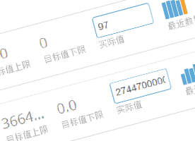
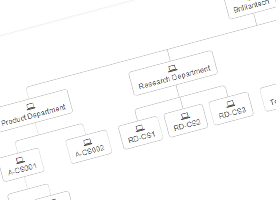
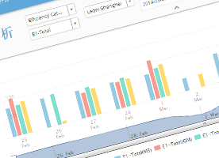
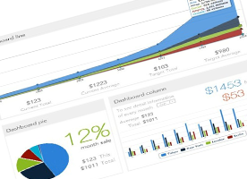
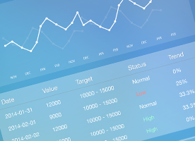
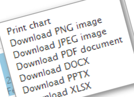

Features

Customizable KPI
Customization is a corner stone philosophy at ClearInsight. We can automatically provide some individual KPI’s, like KPI name, target but users can also define the KPIs.

Illustrate organizational structure
Assigning KPI’s to relevant personnel, if multiple departments have the same KPI’s you can aggregate the data to analyse interdepartmental performance.

Dynamic analysis
Analyse many KPIs at a time. Specifically, we enable our clients to overlay KPI’s in order to compare the performance of complimenting functions within the organisation. You can also see the discrepancy between the actual data with the target data.

Dashboard monitor
Clear Insights provides you with a centralized KPI ecosystem perpetually accessible to colleagues in real time. Ultimately, this KPI ecosystem promotes the crucial collaboration element necessary to arrive at actionable insights.

Ipad
Our iPad app keeps senior management to keep stay at the heart of the action. Specifically, the app enables our clientds to act proactively as opposed to reactively to key operational events such as employee productivity and right first time percentage.
